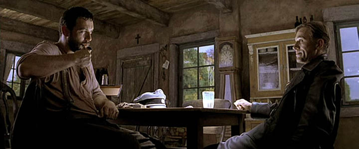
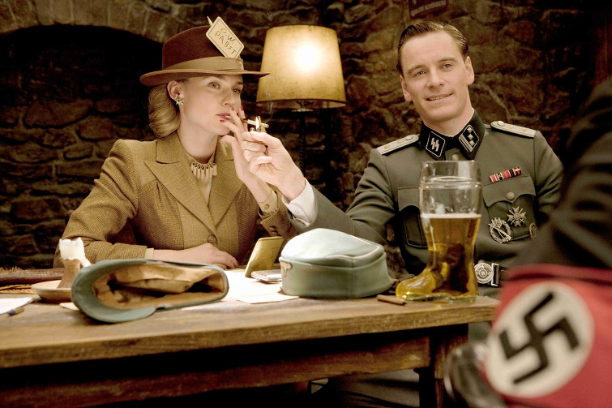
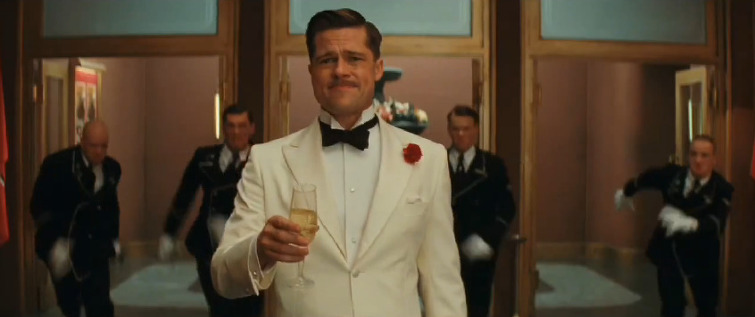
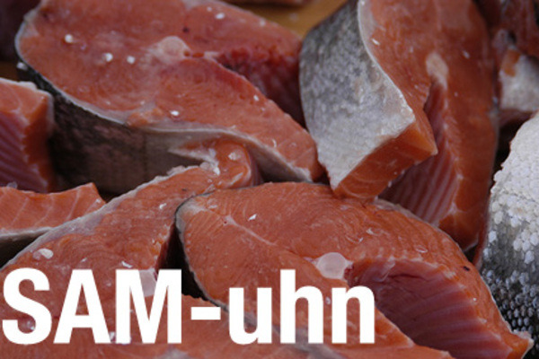
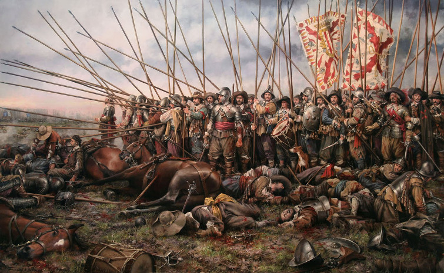
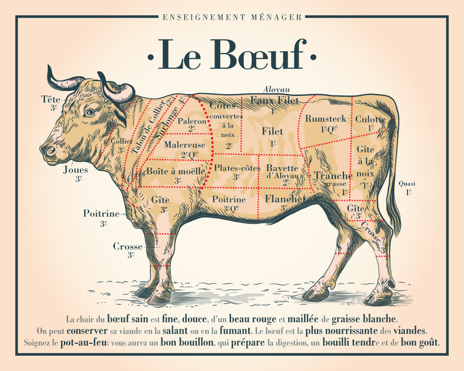
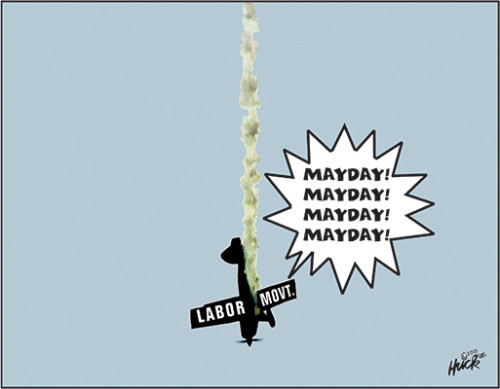

프랑스어, 영어를 침공하다 - 영화 바스터즈의 한 장면
게시: 2020-09-03T06:30:41+09:00
전에 케이블 TV에서 '바스터즈, 거친 녀석들' (Inglourious Basterds) 라는 브래드 피트 주연의 영화를 봤습니다. 사실 이거 예전에 본 거 다시 본 겁니다. 그만큼 재미있었거든요. 이 영화에서는 걸죽한 남부 테네시 (Tennessee) 사투리를 쓰는, 그야말로 양아치 삘이 100% 나는 브래드 피트의 연기도 기가 막혔지만, 무엇보다도 나찌 친위대 대령 한스 란다 역을 맡은 크리스토프 발츠 (Christoph Waltz)의 연기가 정말 인상적이었습니다.
(이 아저씨 연기력 ㅎㄷㄷ)

(프랑스 농부 아저씨가 란다 대령과 대화하는 장면입니다. 진짜 저런 SS 대령과 이야기를 하다보면 술술 다 불 수 밖에 없다는 느낌을 받을 정도로 대단한 연기였습니다.)

(물론 이 영화에서 다들 최고로 뽑는 장면은 이 지하 술집 장면이지요. X맨 퍼스트 클라스에 매그니토로 나왔던 저 영국 배우 아저씨도 아주 매력적인데 의외로 잘 안 뜨대요 ?)
(발츠 아저씨에게 밀려서 그렇지, 사실 브래드 피트도 양아치 연기 하나는 진짜 알 파치노 부럽지 않다는...)
이 한스 란다 대령은 유태인 사냥꾼으로서 유쾌하고 예의바르면서도 냉혹하고 무시무시한, 정말 연기하기 까다로운 역이었습니다. 특히 인상적이었던 것은 이 대령은 프랑스어와 영어 뿐만 아니라 이탈리아어까지도 자유자재로 구사하는 엄청난 엘리트라는 점이었지요. 원래 크리스토프 발츠는 (자신이 오스트리아 출신이니까) 모국어인 독일어는 물론 프랑스어와 영어도 원래 유창하게 잘 하는 편이었다고 합니다. 다만 이탈리아어는 원래 잘 하는 편이 아니라고 겸손하게 밝혔다고 하네요. '우리도 이탈리아 말을 거의 못 하지만, 독일인들은 대개 이탈리아어를 모르니까 그냥 이탈리아 사람으로 변장하자' 라고 계획을 짰던 브래드 피트가, 의외로 란다 대령이 유창한 이탈리아어로 말을 걸어오자 난감해하며 눈썹이 여덟팔자로 올라가는 연기는 정말 이 영화의 압권 중 하나지요.

(나찌 친위대에게 체포되기 직전의 알도 레인 중위. 저 여덟팔자 눈썹에 주목...) 영화 도입부에서, 이 란다 대령이 어느 프랑스 농부에게 유창한 프랑스어로 자신을 소개하는 과정에서 단어 하나가 불어를 거의 못 하는 제 귀에도 쏙 들어오더군요. '콜로넬'이라는 단어였습니다. 바로 영어의 colonel, 즉 대령입니다. 영어가 원래 스펠링 따로 발음 따로 되는 단어들이 많은 단어이긴 합니다만, 군사 용어 중에 특히 그런 것이 많습니다. 전에 '군단 (corps) 이라는 단어의 발음은 왜 콥스가 아니라 코어인지 ?' 편에서도 쓴 바 있습니다만, 이런 단어들은 대개 프랑스어에서 들어온 것들이 많습니다. 많은 사람들이 헷갈리기 쉬운 단어 중 하나인 corps도 그 중 하나지요. 중위 내지는 부관이라는 뜻의 lieutenant 같은 단어도, 한눈에 딱 봐도 프랑스어 냄새가 폴폴 나는 단어입니다. 'in lieu of' (~ 대신에)라는 숙어에서 보듯이, lieu는 '장소' 라는 뜻이거든요. Tenant은 불어로 쥐고 있다 (tener의 현재진행형) 라는 뜻이라서, "captain이 자리를 비운 사이에 그 자리를 대신 하는" 정도의 뜻으로서 부관/중위를 뜻하는 lieutenant (루테넌트, 불어로는 류뜨낭)이라는 계급 이름이 생겨난 것입니다. 이 단어는 딱 보기에도 발음과 스펠링이 (적어도 영국인들에게는) 어렵고 생소하게 느껴졌기 때문에, 정확하게 같은 뜻의 영어 단어인 'steadholder' 라는 계급 이름으로 바꾸려는 노력이 19세기 영국에서 있었다고 합니다. 그러나 역시 언어라는 것은 정부 기관이나 학자들의 힘으로는 쉽게 바뀌는 것이 아니라서, 실패로 끝났다고 합니다. 지금도 영국 육군에서는 이 단어를 루테넌트가 아니라 '레프테넌트' (LEF-tenant) 라고 발음한다고 합니다. 같은 영국이라도 해군은 그에 대해서 '무식한 놈들이 무식한 티를 내는 행위' 라고 경멸하며 또박또박 '루테넌트'라고 발음한다고 하네요.
원래 불어에서는 단어 중간에 있는 자음이 묵음인 것이 많습니다. 가령 연어라는 생선 이름은 영어로 salmon인데, 이를 '샐먼'이라고 발음하면 '성문종합영어' 공부를 제대로 안한 티를 내는 것이 됩니다. 중간의 L은 묵음이거든요. 이렇게 발음과 스펠링이 어긋나는 것도 프랑스어 때문입니다. 프랑스어로 연어는 소몽 (saumon)인데, 수백년 전에는 이 발음에 대한 불어 스펠링이 salmun이었답니다. 이때도 발음은 소몽 정도였고, 이 형태로 프랑스 노르망디 귀족들의 프랑스어 단어가 영국어에 들어갔습니다. 그런데 프랑스어에서는 이 묵음 L이 사라진 반면, 영국에서는 그대로 남은 것이지요. 그래서 영어에서는 계속 새먼이라고 발음하면서도 salmon이라고 쓰게 된 것입니다. 재미있게도, 스페인어에서는 이걸 그냥 살몬이라고 읽고 또 salmon이라고 씁니다.

더 희한한 상황은 이 단어가 다시 프랑스로 유입될 때 일어납니다. 가령 Billecart-Salmon이라는 프랑스 샹파뉴 지방의 가문 이름이 있습니다. 이 성씨는 프랑스 귀족인 니콜라 프랑소와 비으카르 (Nicolas François Billecart, bille에서 L은 발음이 나는 듯 안 나는 듯 할 정도로 발음됩니다...)와 영국 귀족인 엘리자베스 새먼 (Elizabeth Salmon)이 1818년에 결혼하면서 새로 만들어진 성씨인데, 문제는 이를 어떻게 읽어야 하는 것이지요. 비으카르-새먼 ? 빌카트-새먼 ? 빌카트-살몽 ? 비으카르-살몽 ? 정답은 프랑스 가문이니까 프랑스 식으로, 즉 '비으카르-살몽' 이라고 읽는다고 합니다. 그러나 영국인들이 이 성씨를 읽을 때 '비으카르-새먼'이라고 발음을 해도 옳은 것으로 받아들여준다고 합니다. 단, 남자 이름까지 '빌카트-'라고 읽는 것은 굉장한 실례라고 합니다.
(저걸 빌카트-샐먼이라고 읽으면 무례를 범함과 동시에 성문종합영어 공부 제대로 안 했다는 것까지 한꺼번에 뽀록나는 거에요 !) 이제 다시 저 콜로넬 colonel 이라는 단어로 되돌아 가지요. 원래 '커늘' 이라고 발음해야 하는 colonel도 프랑스어에서 온 것은 마찬가지인데, 왜 오히려 프랑스어에서는 이를 '커늘'이 아니라 '콜로넬'로 읽을까요 ? 이건 이 단어가 비록 불어에서 들어왔지만, 원래 기원은 스페인 쪽이기 때문에 그렇습니다. 원래 colonel이라는 단어는 이탈리아어 colonna, 즉 영어의 column (대열 종대)에서 나온 말입니다. 즉 대열 종대의 지휘관이라는 뜻이지요. 영어의 칼럼 (column)은 프랑스어로는 콜론느 (colonne)로서, 영어에 왜 또 묵음 N이 들어갔는지 짐작하게 해줍니다. 아무튼 이 대령이라는 단어가 공식 군사용어로 채택된 것은 1534년 프랑스 프랑소와 1세 때 일입니다. 프랑스어로 colonel (꼴로넬)이었지요. 이 단어가 '프랑스 것은 뭐든지 일단 우아하고 세련된 선진국 물건이여' 라는 인식을 가지고 있었던 영국인들에게도 그대로 전해졌습니다. Lieutenant나 corps, regiment 등의 군사 용어들도 그대로 수입되었지요. 다만 이 대령이라는 단어가 스펠링은 프랑스식으로 수입되었을지 몰라도, 발음은 프랑스가 아닌 스페인에서 쓰던 대로 영국으로 들어가게 되었습니다. 16~17세기에 유럽 대륙에서 맹위를 떨치던 것은 합스부르크 스페인의 테르시오(tercio) 총창부대였는데, 영국도 네덜란드 독립 전쟁 등에서 이들과 혈투를 벌여야 했습니다. 이때 즈음해서 스페인의 무적함대가 영국 침공을 꾀하다가 참패를 겪기도 했지요. 아무튼 스페인에서는 이탈리아식의 콜로넬 colonel 이 약간 변형되어 코로넬 coronel 이라고 불리우고 있었습니다. 그렇게 발음은 스페인에서, 스펠링은 프랑스에서 들여오다 보니, colonel이라 쓰고 커늘이라고 읽는 희한한 일이 벌어진 것이지요. 지금도 대령은 프랑스어로는 콜로넬 colonel, 스페인어로는 코로넬 coronel 입니다.

(로크롸 Rocroi 전투에서의 테르시오 부대) 말 나온 김에 영어에 수입된 프랑스어를 나열하자면 정말 많습니다. voyage나 grand 같이 뭔가 프랑스틱 해보이는 단어는 물론이고, money나 bottle, table 같은 일상 단어도 프랑스에서 들어온 단어들입니다. 또 aviation, altitude, pulverize, proposition 등 뭔가 좀 복잡해보이고 먹물깨나 들어보이는 단어는 거의 99% 프랑스에서 들어온 단어라고 보시면 됩니다. 낙엽이 떨어진다고 가을이 fall 이다 ? 그건 좀 촌스럽지요 ? 같은 뜻이지만 약간 우아해 보이는 단어인 autumn 역시 프랑스어 automne (오똔느, 가을)에서 나온 것입니다. 그만큼 과거에는 프랑스와 영국의 국력 및 문화력의 차이가 컸다는 증거지요. 물론 대부분은 노르만 정복 때 들어온 것입니다. 월터 스콧 (Walter Scott) 경의 역사 소설 아이반호 (Ivanhoe) 도입부를 보면 이렇게 영어에 프랑스어가 도입될 때, 즉 노르만 정복 때 앵글로색슨들이 겪어야 했던 아픔에 대해 묘사되는 부분이 있습니다.
----------(돼지치기 거트와 광대 왐바 사이의 대화입니다)--------------- "야, 툴툴거리며 네 다리로 뛰어다는 이 짐승들을 뭐라고 부르냐 ?" 왐바가 물었다. "돼지(swine)쟎아, 이 멍청아, 돼지, 그것도 모르는 사람이 어디 있어 ?" 돼지치기가 대답했다. "그 돼지(swine)이라는 말은 색슨(saxon)어지." 광대가 말했다. "하지만 이 암퇘지를 잡아다 가죽을 벗기고 내장을 처리해서 배신자처럼 발목을 묶어 걸어놓으면 뭐라고 부르지 ?" "돼지고기(pork)지" 돼지치기가 말했다. "그걸 모르는 사람이 없다니 기쁘구만." 왐바가 말을 받았다. "그리고 그 pork라는 것은 말이야, 프랑스 노르망디에서 쓰는 말이야. 그러니까 이 거친 짐승들이 살아서 색슨족 종놈이 기르고 있을 때는 색슨족 이름으로 불리고, 영주님 성에 가서 귀족 나으리들 만찬에 쓰일 때는 노르만족 말인 pork가 된단 말이지. 이 점에 대해서 어떻게 생각하나, 거트 ? 응 ?" -------------------------------- 실제로 돼지고기라는 뜻의 pork는 불어 porc (뽀르끄, 돼지), 양고기라는 뜻의 mutton은 프랑스어 mouton (무똥, 양)에서 나온 것입니다. 쇠고기 beef도 프랑스어 bœuf (뵈프, 소)에서 나온 것이지요. 영어를 처음 배울 때 왜 cow meat, pig meat 라고 하지 않고 beef, pork라고 따로 이름이 있는지 궁금했는데, 알고 보면 이 단어들은 영국인들이 프랑스인들에게 당하고 살았던 치욕의 역사를 보여주는 것들입니다.

하지만 요즘은 프랑스어에 영어 대공습이 일어나고 있습니다. 영국보다는 미국 덕분이긴 하지만, 아무튼 그렇게 되었네요. 가령 building 이라는 단어도 영어 발음 그대로 프랑스에서도 쓰이고 있습니다. (그건 우리나라도 마찬가지이긴 하지요.) 이렇게 영국과 프랑스는 이웃에 살면서 서로 교류가 활발하게 일어나니까 서로 언어가 비슷해질까 싶은데, 아시는 분든 다 아시겠지만 발음이나 문법이나 그다지 비슷하지가 않습니다. 그래서 영국인들도 프랑스어 배우는 것이 (우리가 일본어 배우는 것이 생각만큼 쉽지 않은 것처럼) 쉽지만은 않다고 합니다. 그래서, 나폴레옹 전쟁 당시, 영국군 장교들은 비상용으로 'Jemmy Round'라는 이름을 외우고 다녔다고 합니다. 프랑스군과 싸우다, 패배하여 프랑스군의 총검이 눈앞에 겨두어지는 순간이 되면 어쩔 수 없이 항복을 해야 하는데, 'I surrender'가 프랑스어로는 'Je me rends' (I return myself, 항복한다, 즈 므 랑) 이었거든요. 아무래도 긴박한 순간에 그 숙어가 생각나지 않으면 곤란하니까, 아예 발음이 비슷한 단어인 '제미 라운(드)'라고 외치라는 것이었지요.
비슷한 표현이 비교적 최근에도 생겨났습니다. 영화 속에서 항공기 조종사가 많이 외치는 단어인 'Mayday mayday mayday'라는 표현이지요. 아마 왜 5월 1일 노동절을 뜻하는 단어인 메이데이가 '조난 신호'로 사용되는지 궁금들 하실 겁니다. 이는 1923년에 생겨난 단어인데, 당시 런던 크로이던 (Croydon) 공항의 무전 관제사인 목포드 (Frederick Stanley Mockford)라는 양반이 만든 것입니다. 이 양반에게 여러 국적의 조종사들이 쉽게 말하고 알아들을 수 있는 공용 조난 신호를 만들어보라는 숙제가 떨어지자, 이 양반이 만들어낸 단어가 mayday (메이데이, 좀 빨리 읽으면 메~데~)입니다. 당시 그 공항에 이착륙하는 비행기 상당수가 런던-파리 사이를 오가는 것이었으므로, 상당수 조종사는 프랑스인이었습니다. 그래서 프랑스어 "m’aider" (메데, me aider의 준말, 즉 help me)를 활용해서 영국인들은 그냥 '노동절'이라고 외우면 되는, mayday라는 신호를 만든 것이지요. 메데와 메이데이는 발음이 좀 차이가 나는 것 같다고요 ? 이유는 잘 모르겠으나 영국인들은 프랑스어 단어의 끝부분에 들릴듯 말듯 "~이"를 붙여서 발음하는 경우가 많은 것 같습니다. 가령 ballet는 당연히 프랑스어에서 온 단어이고, 프랑스어로는 그냥 '발레'라고 읽는데, 영어로는 '발레이'라고 읽더군요. 아마 그 영향인 모양이에요.
